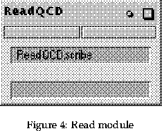

Next: 6.6 Reading in data Up: 6 Getting started with Previous: 6.4 Dot file for
In Explorer a module is like a programme that can be run within the Explorer environment. Numerous modules have been provided, each performing a different operation: reading in files, slicing data, viewing images, etc. The user can also write their own modules, or add modules which have been provided by others.

All Modules contain the following features:
The help option contains a brief explanation of the function of the module as well as the input and output port requirements. A description of the widgets and any known problems and related modules is also included. This option proves useful, especially with new modules, in determining what form the input and output ports require.
Clicking the right button on either the input or output port will give the user a list of connections and what type they must be. Connecting modules together can often be a trial and error task, although experience and looking at maps that have already been created will help.
A data import module called ReadQCD, which was written using a package called dscribe, has been used in all the maps created to read in the data for QCD visualisation.